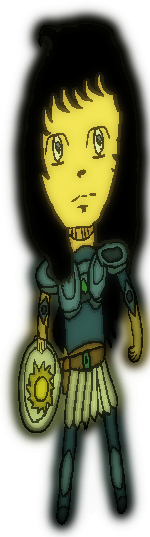
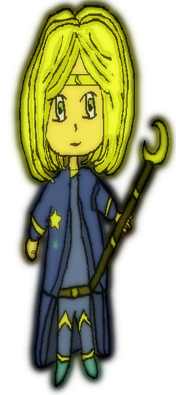

| Story | ||
|---|---|---|
Knights of the Sun/KotS is 2D Platform game based on MSX and NEC-PC 9801 games. You must get back the treasure of Goddess Hana from the Dark Dragon Svarte. You will face more challenges like fight with too many enemies through stages until reach the castle of Dark Dragon Svarte. You can choose two knights: Soryu Koga and Soma Marine each one with different status. So let's get started! |
 |  |
| Pictures | |||
|---|---|---|---|
 KotS - Title Screen |
 Path to the Dark Dragon |
 KotS - Stage 1 Part 1 [Update] |
|